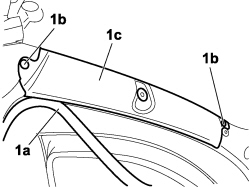

7040H20 ROOF TRIM SEAL (ONE) - REPLACE
- Path
- Procedures > 70 FITTINGS > 7040 BODYSHELL INTERIOR TRIMS AND FITTINGS > 7040H roof panel lining > 7040H20 ROOF TRIM SEAL (ONE) - REPLACE
- Kind
- repair procedure (removal / refitting; the operation number is the code)
- Applies to
- engines: 1.4 8v, 1.6 16v, 1.3 JTD 16V, 1.9 JTD 8V; all production periods
- Interactive page
- https://sloeber94.github.io/elrnDB-fDbl/en/#/223000199
Applies to: engines: 1.4 8v, 1.6 16v, 1.3 JTD 16V, 1.9 JTD 8V; all production periods
 Removing
Removing
 Refitting
Refitting- Turn the ignition key to the OFF position.
- Lift the bonnet
- Disconnect the negative battery terminal.
Description | Connector | |
|---|---|---|
- | BATTERY |
Op. 7040E50 FRONT MODULAR COURTESY LIGHT UNIT - R+R
Op. 7040H08 ODDMENT SHELF ON ROOF TRIM - R.R.
Op. 7020C40 SLIDING SIDE DOOR UPPER GUIDE TRIM (ONE) LEFT OR RIGHT - R.R.
1. Prise up gasket (1a) slightly, release the retaining buttons (1b) and remove the roof lining (1c).

Applies to: engines: 1.4 8v, 1.6 16v, 1.3 JTD 16V, 1.9 JTD 8V; all production periods
Refitting
Removing- Check that the roof lining trim is undamaged and replace if necessary.
- Position the roof lining trim in its seat and secure by pressing the retaining studs.
- Fit the front door housing seal.
Op. 7020C40 SLIDING SIDE DOOR UPPER GUIDE TRIM (ONE) LEFT OR RIGHT - R.R.
Op. 7040H08 ODDMENT SHELF ON ROOF TRIM - R.R.
Op. 7040E50 FRONT MODULAR COURTESY LIGHT UNIT - R+R
- Connect the negative battery terminal.
Description | Connector | |
|---|---|---|
- | BATTERY |